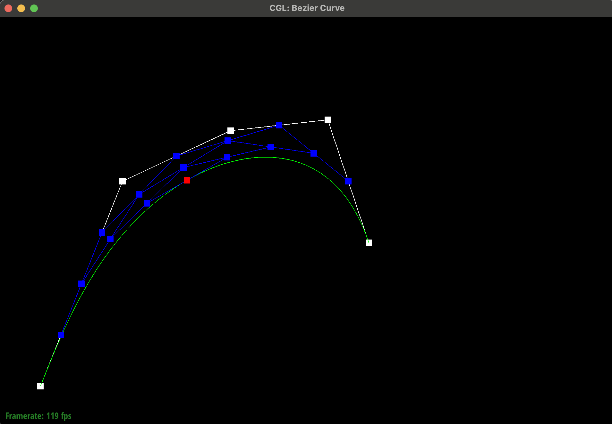

Overview
In this homework, we implement a features to support geometric modeling on meshes. We build Bezier curves, surfaces, and manipulate half-edge data structures to accomplish this. We first use de Casteljau's algorithm to subdivide the control points of the Bezier curve. We then extend this to Bezier surfaces, For triangle meshes, we implement details using the half-edge data structure. We support splitting, flipping, and upsampling the triangle mesh.
Section I: Bezier Curves and Surfaces
Part 1: Bezier Curves with 1D de Casteljau Subdivision
De Casteljau's algorithm is a recursive algorithm that evaluates the Bezier curve. It takes the control points and recursively evaluates the midpoints between the control points. We implemented this algorithm by creating a function to evaluate a recursive step that takes in the control points and the parameter $t$. In one step of a function, we reduce a size n array of control points into a size $n - 1$ array of control points to be used in the next iteration. Each of the $n - 1$ control points is computed by taking the weighted average of the two original control points to its left and right. This can be expressed as: $(1-t) * P[i] + t * P[i+1]$ where $P[i]$ and $P[i+1]$ are the original control points. We then use the step to function evaluate the Bezier curve. We used the provided .bzc files to create our own Bezier curve with $6$ control points. We then used this Bezier curve for our screenshots below. We used the provided .bzc files to create our own Bezier curve with $6$ control points. We then used this Bezier curve for our screenshots below.
6
0.100 0.100 0.200 0.350 0.300 0.600 0.500 0.700 0.800 0.750 0.900 0.450
|
|
|
|
|
|
|
|
|
|
|
|
|

|
t parameter
|
Part 2: Bezier Surfaces with Separable 1D de Casteljau:
De Casteljau's algorithm extends to Bezier surfaces by first using the 1D de Casteljau algorithm to
compute a point for each individual column independently. Using these points, we have another 1d array of
points that we can use de Casteljau's algorithm on to compute the final point. We take in two paramters u
and v, representing the t paramter used in computing the column points and aggregated points
respectively. We implemented this by creating a function to evaluate n - 1 steps of de
Casteljau's recursive step. This would reduce a size n array of control points into one point.
Then this
evaluate1D
function can be used on the columns to create an array. Finally, we finish by running the
evaluate1D function on the array of points to get the final point.
We used the provided bez/teapot.bez file to in the screenshots below.
|
|
Section II: Triangle Meshes and Half-Edge Data Structure
Part 3: Area-Weighted Vertex Normals
We implemented the area-weighted vertex normals by finding the adjacent faces to the vertex with their
associated normal vectors. We take the sum of these normal vectors and then scale so that our vertex vector
becomes a unit vector. The face vectors were calculated using the preexisting .normal()
functions provided in the face class. Internally, this normal function uses the cross product of the edges
of the face to compute the normal vector.

|
|
|
Part 4: Edge Flip
We implemented the edge flip operations by first making iter variables for every single element in the
triangles adjacent to the edges we are trying to flip. These variables are labeled for convenience. For
example, we had variables named ab to represent the half edge from a to b. A variable named
d would represent the vertex d. For edges, we labeled our variable name ab_e. We
then did the same the edges and vertices we wanted in our final state. This meant creating variables for
edges such as ad. When creating a variable for bd, we simply set to the pointer of which edge
it should have replaced in the original state. So EdgeIter ad=bc means that the pointer for the
edge of ac is the same as that of bd. Then, for every single edge in the new state, we set its corresponding
edges and vertices. For example, we use the setNeighbors function of half edges to set every
single one of its data members. Below are screenshots of the teapot mesh before and after some flips.
|
|

|
Part 5: Edge Split
We implemented edge split using the same labeling/variable naming trick as Part 4: Edge Flip. Since new
edges are created, we reroute only the preexisting bc edge into an $mb$ edge. For the other created edges,
we use the methods such as newEdge and others to actually add the edge into the data structure. This creates
new pointers in the list. Otherwise, we follow the same procedure as Part 4, where we create corresponding
labels and call halfEdgeIter.setNeighbors for each halfedge, setting all the half edge
neighbors. Below are screenshots of the teapot before and after some split / edge flip operations.
|
|

|

|
Extra Credit:
I also implemented the extra credit for this part: supporting boundary edge splits. Using the
beetle.dae file, I split edges on the edge of the window to test my implementation.
|
|

|
Part 6: Loop Subdivision for Mesh Upsampling
We implemeted loop subdivision by following the procedure outlined in the homework spec. In general, the procedure followed the following steps:
- First compute the new positions of the vertices for all vertices. This is done by taking a weighted average outlined in the spec of the neighbors of the vertex. We parameterize our weights by the number of neighbors of the vertex, where the weight $u = \frac{3}{16}$ if a vertex has $3$ neigbors, and the weight $u = \frac{3}{8n}$ if a vertex has $n$ neighbors. Then, the final position of the vertex is computed as $(1 - n * u) * originalPosition + u * \sum{neighborsPositions}$.
- Compute the updated vertex positions for every edge that was originally in the mesh. This will become the position of the splitted vertex.
-
Split every edge in the mesh that was an original edge. Be careful to not split edges that were already
split (can flag this using the exisitng
isNewflag present in the edge class). Mark an edge as possible to flip if it was not originally present in the mesh. - Consider all edges that are possible to flip, and flip the edges that connect new vertices with old verteices.
- Reposition all the vertices accordingly, using the positions in both the edges and the vertices to determine the new positions of the vertices.
Meshes behave after loop subdivision by becoming more smooth and round. Sharp corners and edges are reduced.

|

|

|

|
When pre-splitting some edges, the effect of the sharp corners and edges are reduced. We show this in experiments with the cow dae below, where we presplit edges around the cows snout where the turn is sharper, and show that the mesh is smoother as a result of the pre-splitting.

|

|

|

|

|